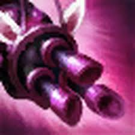
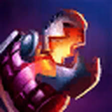
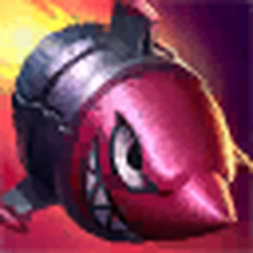

Jinx 💣

Who is Jinx?
Jinx is a chaotic and unpredictable marksman from Zaun in League of Legends, known for her love of explosions, destruction, and pure mayhem.
Lore
Jinx was once an ordinary girl from Zaun, but after a series of tragic events, she lost her sense of stability and embraced chaos instead.
Now known as a criminal mastermind, Jinx causes destruction wherever she goes, leaving behind explosions and confusion while enjoying every moment of it.
🎮 Gameplay
Jinx Highlights 💥
Pro Jinx Plays 🔫
Personality
Jinx is wild, energetic, and completely unpredictable. She thrives on chaos and excitement, often acting without thinking about consequences.
Abilities
-

Switcheroo!: Jinx swaps between her minigun and rocket launcher for different attacks. -
Zap!: Fires a long-range electric shot that damages and slows enemies.
-

Flame Chompers!: Throws traps that root enemies who step on them. -

Super Mega Death Rocket!: Launches a global rocket that deals massive damage.